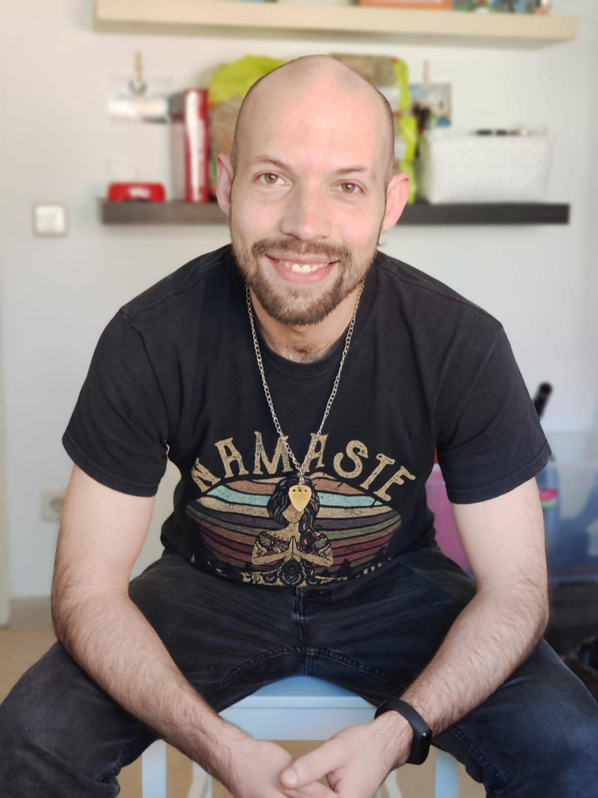

¡Bienvenidos!
Me llamo Jose y tengo 31 años, de Esplugues de Llobregat
hola que tal
muy bien
dentroAunque mi vida laboral nunca ha estado unida al desarrollo web o la programación en general es algo que me interesa desde pequeño. Por poner un ejemplo, con 14 años me presenté junto a un compañero de clase a un concurso de creación de videojuegos utilizando un software llamado GameMaker, no ganamos ni quedamos finalistas, pero quedamos satisfechos con el trabajo que hicimos.
Como comento es un hobby que me acompaña desde pequeño, a mi padre le encantaba la informática y es algo que me supo transmitir. Después de pasar los 10 primeros años de mi vida laboral en el sector químico en una planta de acondicionado de gases, un poco por cansancio y un poco por influencia de algunos amigos que ya estaban trabajando en ello, me decidí a dejar el trabajo y empecé a estudiar sobre desarrollo web.
Primero me decidí a cursas un certificado de profesionalidad a modo de prueba, para asegurarme de que el desarrollo web también era un area que me interesara. Después inicié este mismo certificado de profeisonalidad que ahora cursamos, sin embargo me salió una oportunidad laboral de 6 meses y pensé que lo mejor era cogerla para poder acumular recursos que luego me permitirían dedicarle más tiempo a estudiar. No así, gusté en la empresa que me fichó para 6 meses (empresa hotelera) y decidieron formarme para quedarme como responsable de la logística de uno de los hoteles, las condiciones eran francamente buenas, así que acepté y deje aparcado el desarrollo web.
Finalmente con la llegada de la pandemia, al pertenecer ahora al sector de la hostelería, me he dado cuenta de que realmente lo más acertado es intentar meter la cabeza en el mundo de la programación a nivel profesional, pues además de estar en pleno auge es algo que promente un largo recorrido.